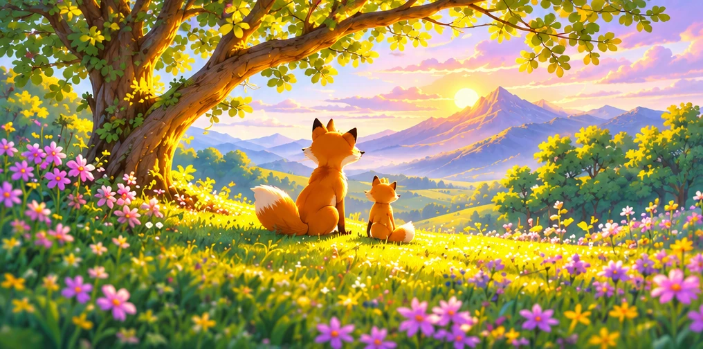
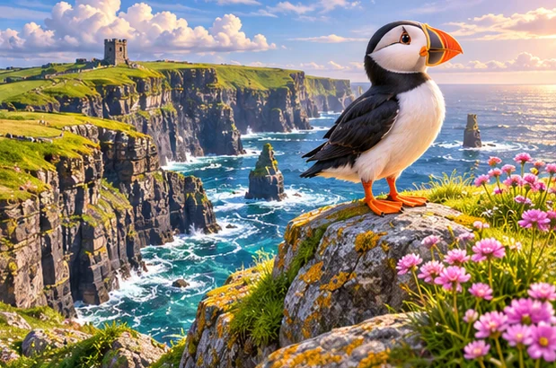
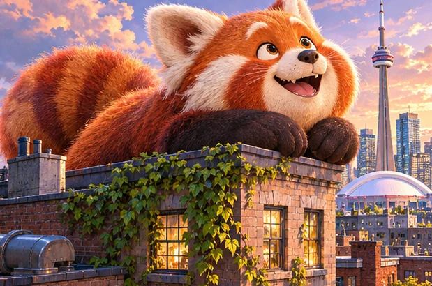

2018·Австралія·7 хв / серія·2+
Bluey
Семихвилинні історії про гру двох сестер і тата, який грається всерйоз. Найточніший мультик про те, як виглядає підтримка в побуті.
Де шукатиsweet.tv або Megogoліцензія Disney · український дубляж
Питання після переглядуУ яку гру з Блуї ти хочеш, щоб ми зіграли сьогодні?

2015·Ірландія·7 хв / серія·2+
Puffin Rock
Тиха історія про пташку Уну, яка піклується про молодшого брата. Повільний темп, жодного конфлікту на підвищених тонах.
Де шукатиNetflixпрацює в Україні, український інтерфейс
Питання після переглядуЯк Уна зрозуміла, що братикові потрібна допомога?

2013·США·102 хв·4+
Frozen
Сестра йде в кригу за сестрою. Під піснями — історія про людину, яка закрилася, бо боїться нашкодити, і про ту, що не відступилася.
Де шукатиsweet.tv або Megogoліцензія Disney · український дубляж
Питання після переглядуЧому Ельза втекла? Що їй допомогло б замість утечі?

1988·Японія·86 хв·4+
となりのトトロ
Дві сестри переїжджають у село, бо мама в лікарні. Страх і ніжність поруч, і лісовий дух, який просто є рядом, коли важко.
Де шукатиNetflixбібліотека Ghibli · українського дубляжу може не бути
Питання після переглядуЩо допомагало дівчаткам, коли вони сумували за мамою?

2002·США·81 хв·5+
Ice Age
Троє, які терпіти не можуть одне одного, несуть людське дитинча додому — і стають родиною по дорозі.
Де шукатиsweet.tv або Megogoліцензія Disney · український дубляж
Питання після переглядуЯк вороги стали друзями?

2003·США·100 хв·5+
Finding Nemo
Тато переплив океан за сином, а по дорозі навчився довіряти. Немо з хворим плавцем — про те, що «не такий» не означає «не зможе».
Де шукатиsweet.tv або Megogoліцензія Disney · український дубляж
Питання після переглядуЧого тато Немо навчився від Дорі?

2009·США·96 хв·6+
Up
Старий піднімає дім на повітряних кульках, щоб виконати обіцянку дружині, — і отримує несподіваного онука. Перші десять хвилин — найчесніша розмова про втрату в мультиплікації.
Де шукатиsweet.tv або Megogoліцензія Disney · український дубляж
Питання після переглядуЧому Карл спочатку не хотів ні з ким говорити?

2015·США·95 хв·6+
Inside Out
Емоції дівчинки як пʼять персонажів у голові. Головна думка: Сум — не поломка, саме він кличе інших на допомогу.
Де шукатиsweet.tv або Megogoліцензія Disney · український дубляж
Питання після переглядуЯка емоція сьогодні була у тебе за головну?

2021·США·102 хв·6+
Encanto
У родині з магічними дарами одна дівчинка без дару. Про тиск очікувань і про те, як важко бути «сильною» всім на радість.
Де шукатиsweet.tv або Megogoліцензія Disney · український дубляж
Питання після переглядуЧи буває, що від тебе чекають надто багато?

2017·США·105 хв·6+
Coco
Хлопчик потрапляє у світ померлих і дізнається правду про прапрадіда. Мʼяка, музична розмова про память і тих, кого вже немає.
Де шукатиsweet.tv або Megogoліцензія Disney · український дубляж
Питання після переглядуКого з нашої родини ти хочеш, щоб я тобі розповів?

2002·США·85 хв·6+
Lilo & Stitch
Дві сестри після смерті батьків і прибулець, який ламає все. «Охана означає сімʼя» — тут це не слоган, а вибір щодня.
Де шукатиsweet.tv або Megogoліцензія Disney · український дубляж
Питання після переглядуЩо робить людей сімʼєю?

2014·Ірландія·93 хв·7+
Song of the Sea
Брат і сестра після зникнення мами. Мальовано як ірландський орнамент, сказано про горе, яке не можна запечатати в камінь.
Де шукатиПрокат: Megogo, Apple TVчасто лише з субтитрами
Питання після переглядуЧому бабуся і тато поводилися так, ніби нічого не сталося?

2018·Велика Британія·25 хв / серія·7+
Hilda
Безстрашна дівчинка переїжджає з лісу в місто і знаходить друзів. Її мама — рідкісний приклад дорослої, яка вміє злитися й лагодити стосунки.
Де шукатиNetflixпрацює в Україні, український інтерфейс
Питання після переглядуЯк Хільда поводиться, коли їй страшно?
2001·Японія·125 хв·8+
千と千尋の神隠し
Дівчинка працює в лазні для духів, щоб урятувати батьків. Страшно, красиво і про те, як страх перетворюється на витримку.
Де шукатиNetflixбібліотека Ghibli · українського дубляжу може не бути
Питання після переглядуЩо зробило Тіхіро сміливою — вона не боялася чи боялася і все одно йшла?

2021·США·113 хв·8+
The Mitchells vs. the Machines
Тато й донька, які не розуміють одне одного, рятують світ у відпустці. Смішно й точно про батьків, що бояться втратити дитину дорослою.
Де шукатиNetflixпрацює в Україні, український інтерфейс
Питання після переглядуЧого тато не помічав у Кейті?

2022·США·100 хв·8+
Turning Red
Тринадцятирічна Мей перетворюється на панду, коли сильно хвилюється. Про злість, яку забороняли, і про чотирьох подруг, що просто стоять рядом.
Де шукатиsweet.tv або Megogoліцензія Disney · український дубляж
Питання після переглядуЩо Мей робила зі своєю злістю? А що робиш ти?